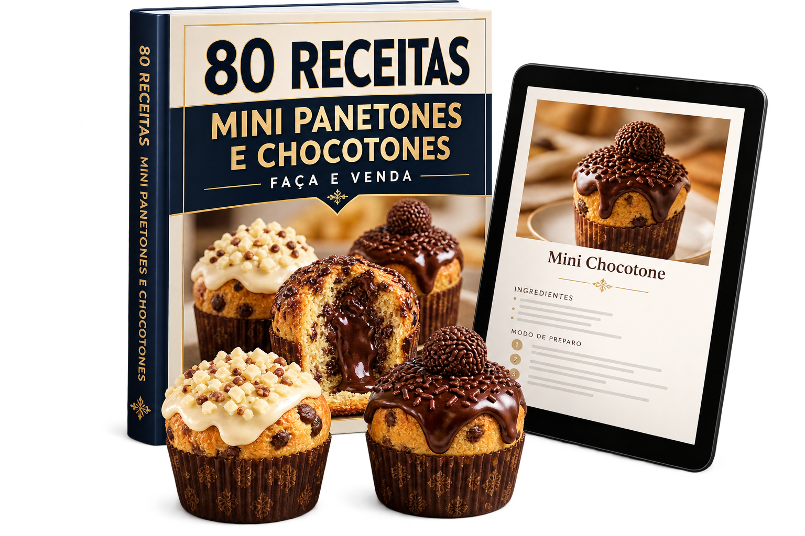
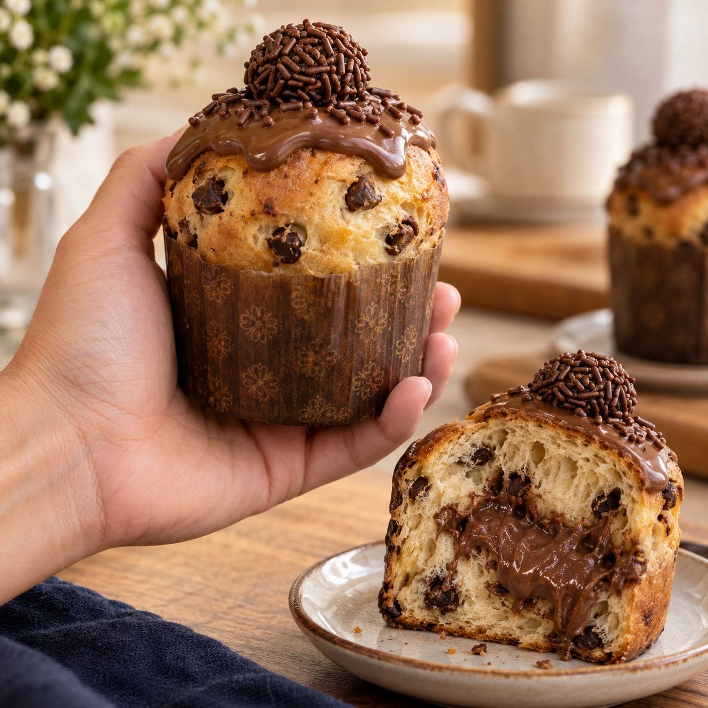
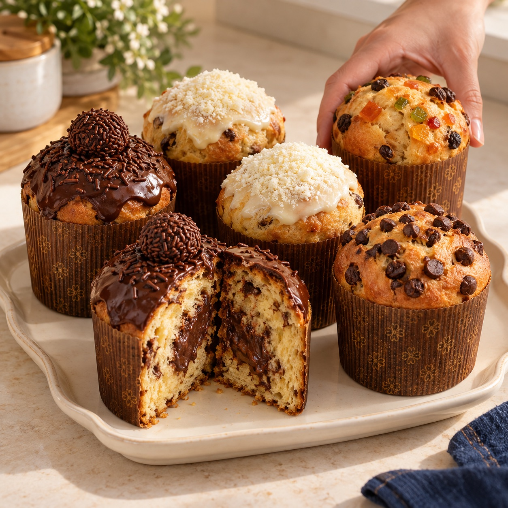
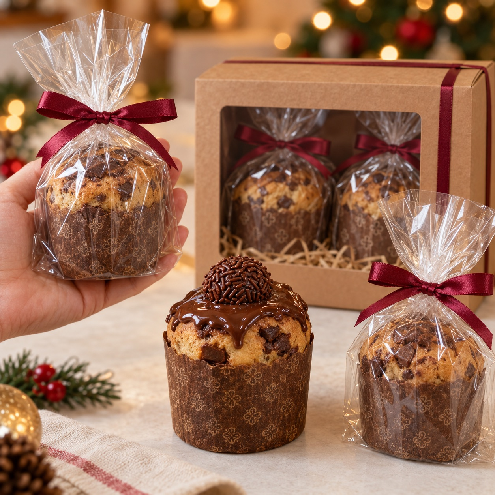
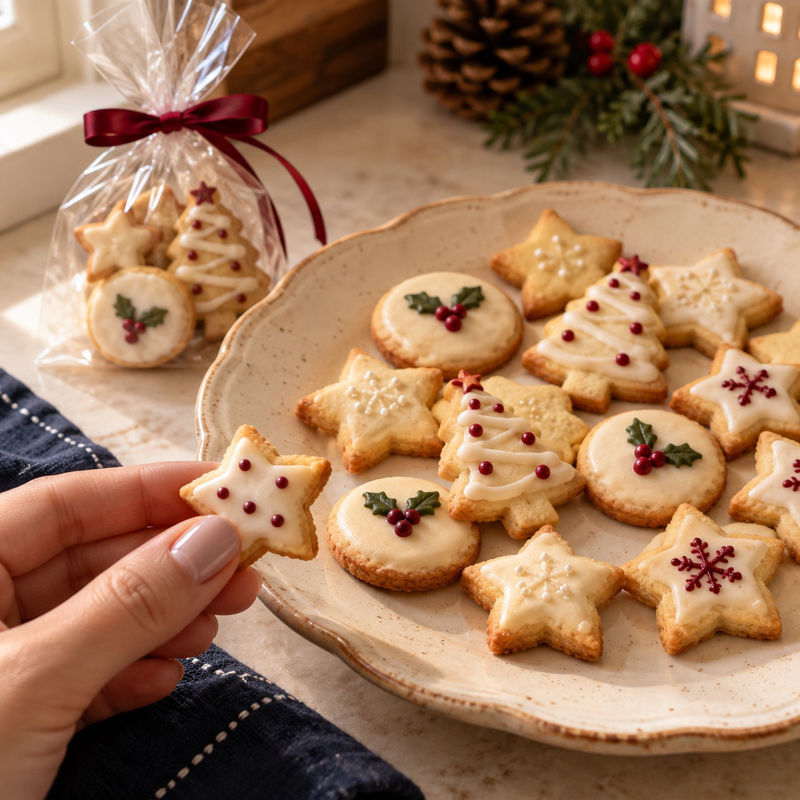
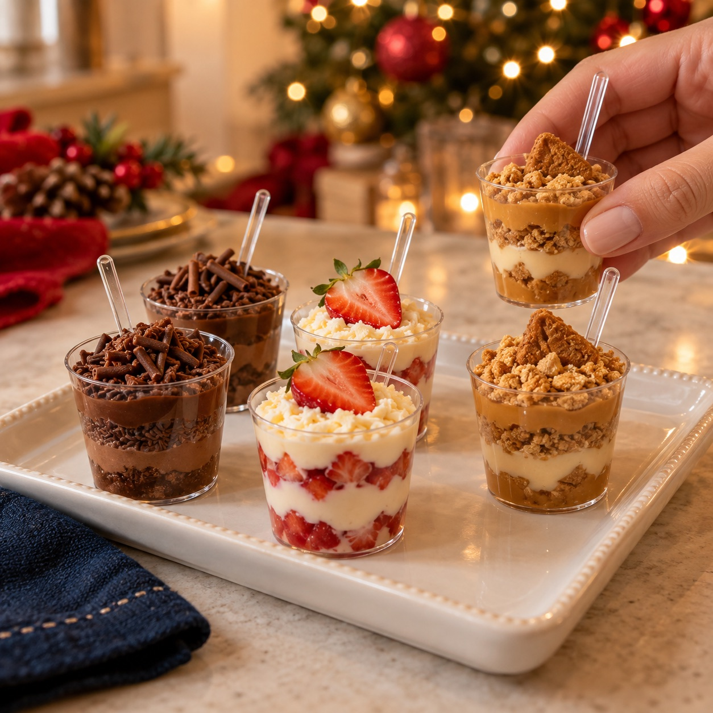
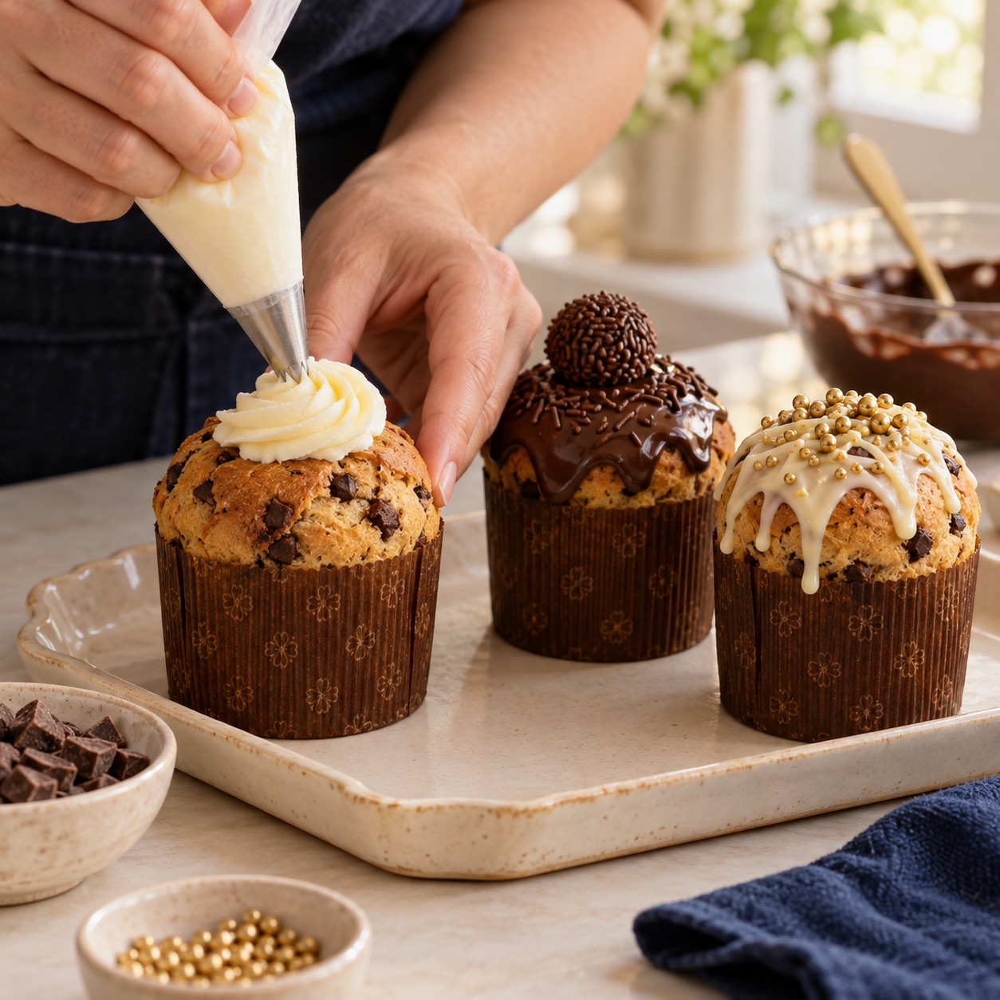
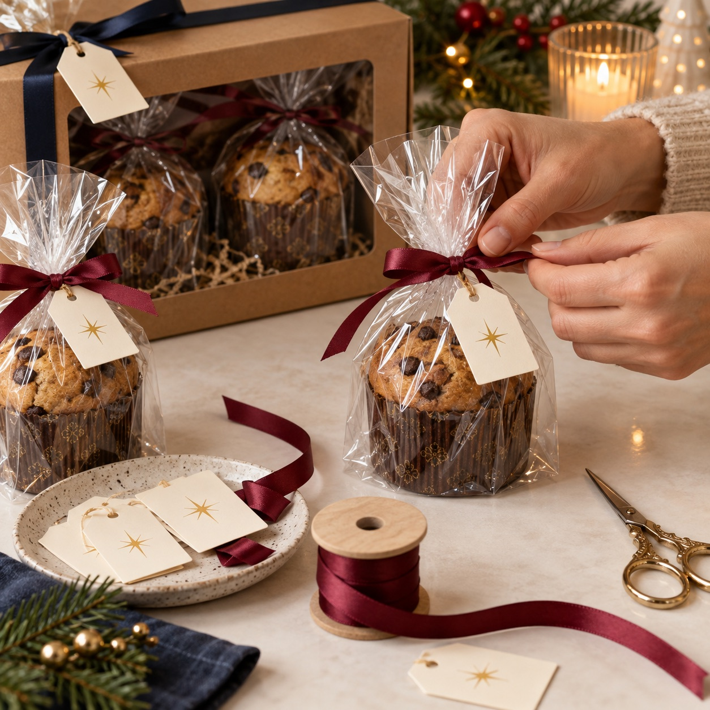
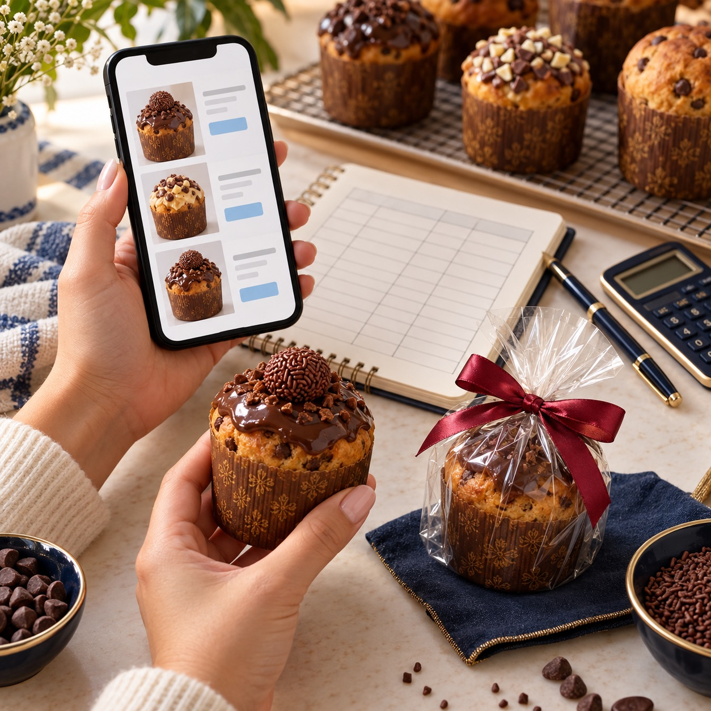

Forno
Para assar seus mini panetones.
Prepare na sua cozinha para saborear com a família, presentear amigos ou vender no Natal. As receitas já têm ingredientes, quantidades e preparo.

A partir de R$ 12,90 • Pagamento único • Garantia de 7 dias
Faça para o café com a família, monte presentes de Natal ou prepare suas encomendas.



Imagens ilustrativas geradas por IA. Não representam produção de alunos.
Consulte os ingredientes e utensílios indicados na receita escolhida.
Para assar seus mini panetones.
Para medir os ingredientes em gramas.
O tamanho das porções individuais.
Tigelas, espátulas e os itens da receita.
Separe as quantidades antes de começar.
Escolha a receita, confira a lista e organize sua bancada.
QUERO PREPARAR MEUS MINISTem receita para o seu momento na cozinha, seja por prazer, para presentear ou para vender.
E quer experimentar massas, recheios e coberturas sem precisar procurar cada receita.
E escolher os sabores para o café da tarde ou a mesa de Natal.
Com mini panetones preparados por você e o recheio que cada um gosta.
Para colegas, professores, vizinhos e outras pessoas especiais.
E precisa de receitas para preparar suas primeiras unidades e abrir encomendas.
E quer incluir mini panetones e kits de Natal no seu cardápio.
O sabor que vai preparar.
Ingredientes, utensílios e formas.
Siga as etapas da receita.
Recheie e coloque a cobertura.
Sirva em casa, presenteie ou venda.
PREPARE → FINALIZE → SABOREIE, PRESENTEIE OU VENDA
As mesmas 80 receitas para fazer em casa, presentear ou vender. No completo, você recebe também os 5 bônus.
Um material em PDF para consultar na cozinha pelo celular ou imprimir.
Material digital. O livro e o tablet do mockup são ilustrativos.
Escolha o seu favorito, o que sua família gosta ou o que vai entrar no seu cardápio.
Biscoitos, sobremesas, acabamentos e embalagens. E, se quiser vender, um guia para começar.

Receitas para preparar biscoitos, servir no café e montar lembrancinhas.
Incluído no Completo
Combinações de chocolate, leite em pó e doce de leite em porções individuais.
Incluído no Completo
Ideias de coberturas, confeitos e acabamentos para deixar cada mini com a sua cara.
Incluído no Completo
Ideias de saquinhos, laços, caixas e tags para completar os seus presentes.
Incluído no Completo
Como considerar os custos, montar seu cardápio e divulgar os minis no WhatsApp.
Incluído no CompletoImagens ilustrativas dos bônus, geradas por IA. Os materiais são digitais.
Escolha as 80 receitas ou leve também os 5 bônus para preparar outras delícias, decorar, presentear e vender.
Para fazer por prazer, servir em casa e presentear amigos e família.
Abra a área de receitas no celular ou computador. Nesta versão, o acesso inclui também as aulas e os bônus.
pagamento único • 80 receitas em PDF
7 dias para conhecer o materialPara fazer os minis, preparar outras delícias e caprichar nos presentes de Natal.
01. Biscoitos de NatalPrepare para servir ou presentear.
02. Sobremesas no copinhoMais opções para a sua mesa de Natal.
03. Decorações para os minisVarie coberturas, confeitos e acabamentos.
04. Embalagens e tagsCapriche na apresentação dos presentes.
05. Guia para vender seus minisCustos, cardápio e divulgação no WhatsApp.
pagamento único • 80 receitas + 5 bônus
7 dias para conhecer o materialNão gostou? Solicite seu dinheiro de volta em até 7 dias pelo canal informado na compra.
Básico ou Completo.
Confira seus dados no pagamento.
A liberação depende da aprovação.
Abra o endereço da área de membros recebido após a compra.
Produto 100% digital. Nenhum ingrediente, panetone ou livro físico será enviado.
Sim. O material parte dos ingredientes e explica o preparo, o recheio e a finalização. Você também encontra as quantidades em gramas e o rendimento de cada receita.
Não. O material é digital. Você não recebe panetones prontos nem um livro impresso.
O Básico custa R$ 12,90 e o Completo custa R$ 19,90. Nesta versão, os dois dão acesso à mesma área completa, com 80 receitas, aulas públicas de apoio e os 5 bônus.
Não. Você pode fazer por hobby, servir em casa ou presentear amigos e família. As 80 receitas estão nos dois pacotes. Os bônus do Completo também incluem outras receitas, decorações e embalagens para presentes. O guia de vendas é uma opção para quem quer comercializar.
Sim. Você pode preparar para vender por unidade, em kits e por encomenda.
As receitas são pensadas para formas de 100 g. O peso final pode variar conforme o recheio e a cobertura usados.
Sim. Você recebe as receitas escritas, os PDFs e uma seleção de 11 aulas públicas de apoio do YouTube, com crédito aos criadores. Os vídeos ajudam com técnicas de massa, recheios e bônus e podem usar fórmulas diferentes das fichas.
Não. Você paga uma única vez pelo pacote escolhido.
Você tem 7 dias após a compra para solicitar o reembolso integral pelo canal informado na compra.
Escolha o sabor e prepare seus mini panetones. Para curtir na cozinha, dividir, presentear ou vender.
QUERO ESCOLHER MEU PACOTEA partir de R$ 12,90 • Material digital • Pagamento único